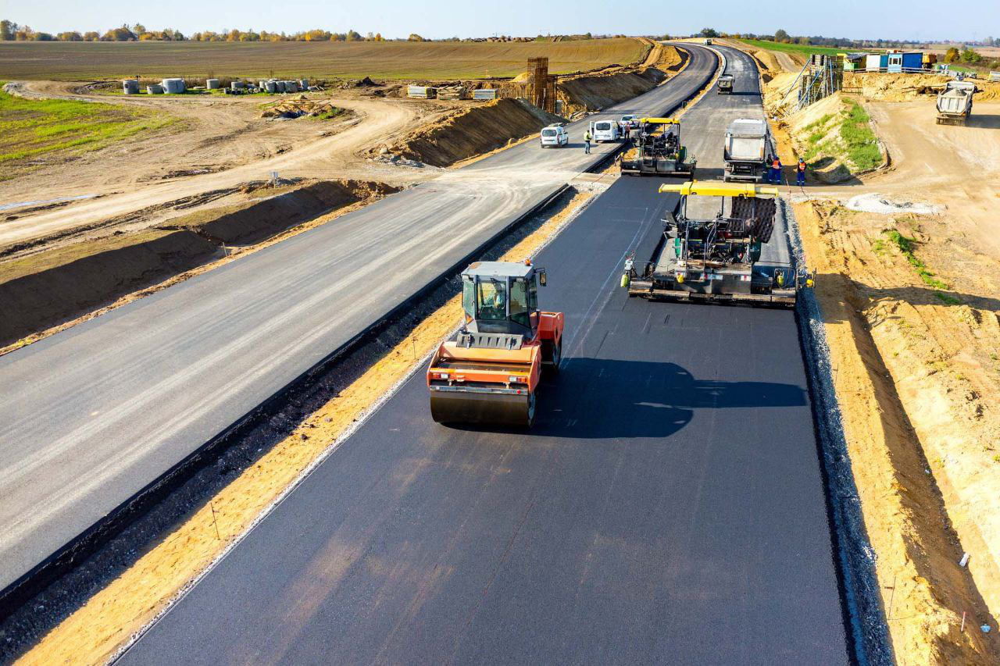
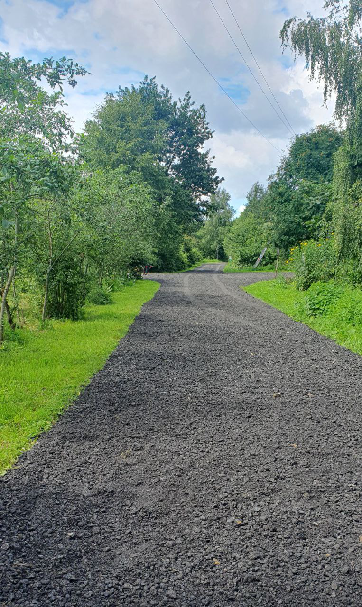
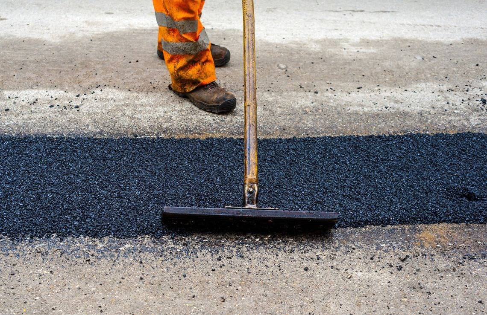

Строительство дорог
Строительство дорог любой сложности — это ответственный и многоступенчатый процесс, который включает в себя несколько этапов:
1. Разработка проектно-сметной документации. На этом этапе определяется маршрут дороги, ее геометрические параметры, необходимые объемы земляных работ, а также рассчитывается смета на будущее строительство.
2. Подготовка площадки под строительство. На этом этапе проводятся работы по очистке территории от растительности, земляных работ, расчистке леса, а также определяется необходимость проведения дополнительных комплексных мероприятий.
3. Устройство дорожного покрытия. В зависимости от типа дороги, местных климатических условий и многих других факторов, производится укладка асфальтобетонного, бетонного или другого типа покрытий.
4. Устройство дренажной системы. Этот этап производится для сбора и отвода дождевой, талой и грунтовой воды, что помогает предотвращать затопление дороги во время дождей.
Каждый из этих этапов требует максимальной точности и внимательности, а также квалифицированных специалистов и высококачественных материалов и оборудования. Только тогда можно гарантировать результат, который будет оправдывать все затраченные усилия и средства.
Режим
24/7
Скидки
д
о
10%
Опыт
10
л
е
т
Виды работ
Строительство дорог в коттеджных дачных поселках
Подробнее
Строительство дорог к частным домам
Подробнее
Строительство сельских дорог
Подробнее
Строительство дорог в СНТ
Подробнее

Наши Услуги
- от 550 Р/М 2
 Подробнее
ПодробнееАСФАЛЬТИРОВАНИЕ ДОРОГ И ТЕРРИТОРИЙ
- от 200 Р/М 2 Вы на странице строительство
СТРОИТЕЛЬСТВО
ДОРОГ - от 160 Р/М 2 Подробнее
АСФАЛЬТНАЯ
КРОШКА - от 650 Р/М 2 Подробнее
Ямочный
ремонт - от 150 Р/М 2
 Подробнее
ПодробнееБЛАГОУСТРОЙСТВО
ТЕРРИТОРИЙ - от 120 Р/М 2
 Подробнее
ПодробнееДОПОЛНИТЕЛЬНЫЕ
ДОРОЖНЫЕ РАБОТЫ - Асфальтирование дорог Строительство дорог АСФАЛЬТНАЯ КРОШКА ЯМОЧНЫЙ РЕМОНТ БЛАГОУСТРОЙСТВО ТЕРРИТОРИЙ ДОПОЛНИТЕЛЬНЫЕ ДОРОЖНЫЕ РАБОТЫ
Чтобы узнать точную стоимость работ,
запишитесь на бесплатную консультацию
Оставляя заявку, вы соглашаетесь на обработку персональных данных
Контакты
Наш адрес:
г.Домодедово, Рабочая улица, 44.Наш e-mail:
rus-dorstroy24@yandex.ru +7 906 040-00-30
+7 906 040-00-30
Мы в Whatsapp